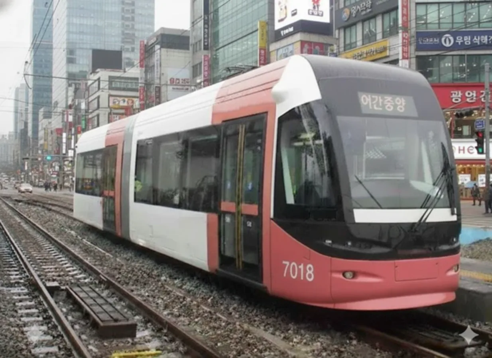
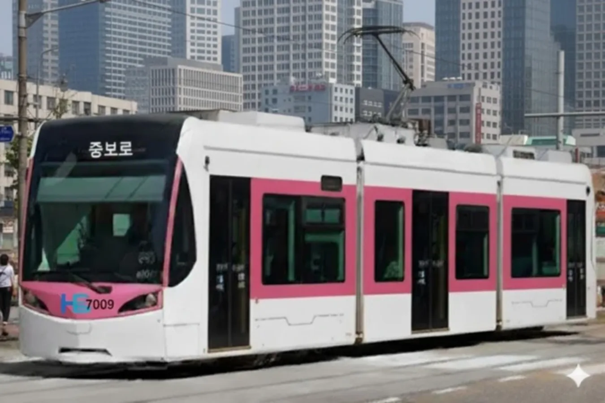
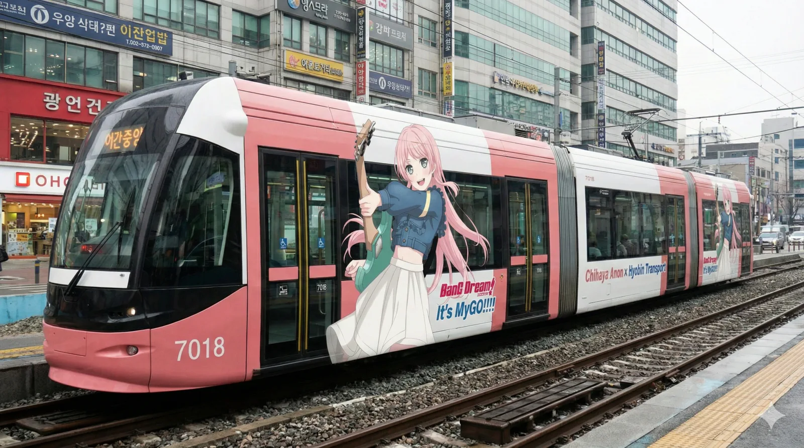
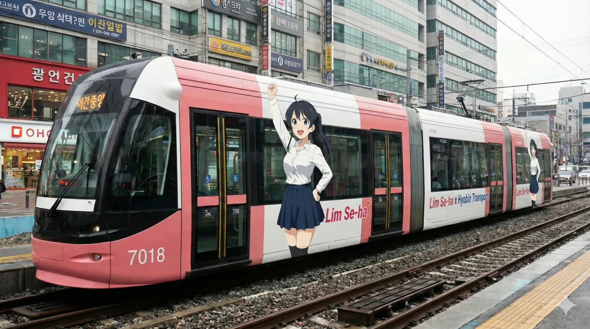
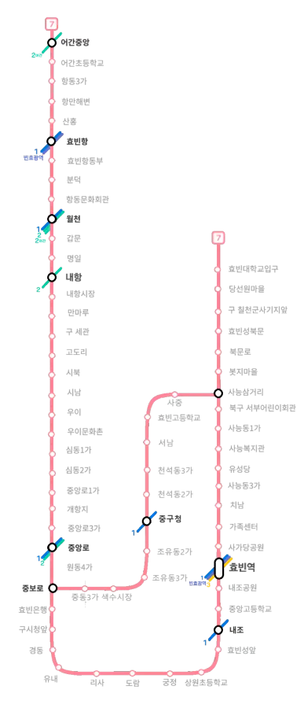

|
|||
|
 효빈교통공사 7000호대 (1세대)[1]
 효빈교통공사 7000호대 (2세대)
  촬영지: 중앙로3가역
7호선 마스코트 임세하 래핑열차  노선도
|
|||
| 노선 정보 | |||
|---|---|---|---|
| 노선 분류 | 도시철도 | ||
| 차량 분류 | 노면전차 (트램) | ||
| 기점 | 어간중앙역 | ||
| 종점 | 효빈대학교입구역 | ||
| 역 수 | 67개 | ||
| 구성 노선 | 효빈 도시철도 7호선 | ||
| 상징색 | 분홍색 (#FF8899) | ||
| 개통일 | 1931년 4월 5일 (96주년) | ||
| 소유자 | 효빈광역시 (구 회주공업) | ||
| 운영사 | 효빈교통공사 (구 회주공업) | ||
| 사용 차량 | 효빈교통공사 7000호대 전동차 | ||
| 차량기지 | 내항차량사업소 | ||
| 노선 제원 | |||
| 노선연장 | 23.59km | ||
| 궤간 | 1,435㎜ (표준궤) | ||
| 선로구성 | 복선 | ||
| 급전방식 | 직류 1,500V 가공전차선[2] | ||
| 신호방식 | Kyosan Signal ATC/ATO | ||
| 최고속도 | 45㎞/h | ||
| 표정속도 | 21.3㎞/h | ||
| 통행방향 | 우측통행 | ||
| 개통 연혁 |
1931.04.05 우이-사능삼거리 1932.03.08 우이↔효빈항남부, 중보로↔사능삼거리 1932.08.20 중보로↔오석 1933.01.05 칠천기지입구-사능삼거리 1934.02.22 칠천기지입구↔효빈대입구 1934.07.22 사능삼거리↔해서 1935.05.04 시청앞↔정동 1935.12.04 효빈항남부-항동리 1936.05.20 효빈대입구↔사복리 1936.07.19 오석↔입리, 리사 1937.03.09 효빈역↔청엽, 효빈항남부역 이전 1940.02.10 사복리-고송촌 1969.11.30 대규모 폐지 (고송촌, 사능, 정동 등) 2010.03.02 항동3가↔어간중앙 2010.03.05 공영화 및 7호선 편입 |
||

1. 개요
대한민국에서 유일하게 전 구간이 살아남아 현대까지 이어져 온 정통 노면전차(트램) 노선이다. 1931년 '효빈전차'라는 이름으로 첫 삽을 떴으며, 2010년 공영화 과정을 거쳐 현재는 효빈교통공사에서 도시철도 7호선으로 운영하고 있다. 효빈광역시 남구의 어간중앙역에서 서구의 효빈대학교입구역을 잇는다.
운행하는 열차는 최신예 저상 트램인 효빈교통공사 7000호대 전동차이며, 통행방식은 우측통행이다. 노선색은 ● 분홍색(#FF8899)으로, 이 색상에는 '희망'이라는 뜻이 담겨 있다. 물론 길 한가운데서 차가 막힐 땐 자동차 운전자들에게 절망의 핑크가 되기도 한다(...)
효빈시가 서울이나 부산과 달리 '대중교통 천국(대중교통 분담률 69%)'이 될 수 있었던 결정적인 1등 공신이다. 도로 한가운데를 차지하고 있음에도 자가용과 시내버스 수요를 스펀지처럼 대거 흡수해 대량의 인원을 효율적으로 수송해버리기 때문에, 구도심인 중앙로 일대가 타 대도시처럼 숨 막히는 극심한 교통체증에 시달리지 않는 쾌적한 환경을 유지하고 있다.
2. 역사 (피와 철의 연대기)
2.1. 태동과 전후 재건 (1931~1950s)
1931년 4월 5일, 서울과 부산에 이어 국내 세 번째로 개통되었다. 초기에는 중보로, 우이, 사능삼거리를 잇는 계통으로 시작하여 도시의 확장에 맞춰 항동(해안), 당선촌(현 효빈대), 해서 방면으로 뻗어 나갔다. 전성기 사능동 중심부는 인구 5만 8천 명을 자랑하는 북구의 심장이었다.
한국전쟁으로 시설의 80%가 파괴되었으나, 1953년 33세의 젊은 사업가였던 회주공업 창업주 박신유가 "도시의 핏줄부터 살려야 한다"며 사재를 털어 복구를 주도했다. 이는 전후 효빈시가 빠르게 산업 도시로 성장하는 기틀이 되었다.
2.2. 1968년, 도시를 지킨 박신유의 결단
1968년, 군사정권은 "전차는 자동차 흐름을 방해하는 구시대의 유물"이라며 서울, 부산과 함께 효빈전차의 전면 폐지를 명령했다. 당시 효빈시는 도로 폭이 좁고 공업 트럭 통행량이 많아 전차가 없으면 도시 전체가 마비될 위기였다.
박신유 회장은 대통령에게 서한을 보내고 자신의 기업인 회주공업 전체를 담보로 내걸며 "국가 지원금 1원도 안 받겠다. 내 돈으로 운영할 테니 중구 노선만은 살려달라. 궤도 뜯어갈 거면 차라리 기업 문 닫고 우리 다 같이 강물에 뛰어들겠다"고 정면으로 호소하며 치킨게임을 벌였다. 이 뼈를 깎는 각오 덕분에 효빈시는 교통 지옥이 된 타 대도시들과 달리 도심의 동맥을 지킬 수 있었다.
2.3. 1969년의 비극: "지선이라서 잘랐다"
그러나 박 회장의 방어에도 불구하고 군사정권은 기계적인 논리로 칼을 댔다. 당시 인구 5만 명이 넘게 거주하던 사능동~해서동 중심 구간을 단순히 본선에서 갈라져 나왔다는 이유만으로 '비효율적인 지선(支線)'이라 규정하고 1969년 11월 30일 강제로 폐지해버렸다.[3]
아이러니하게도 저층 주거지와 경공업 지구가 형성되어 있던 사능동 외곽(현 7호선 잔존 구간)은 '본선'이라는 이유로 폐지되지 않았다. 사능동 중심부 주민들은 매일 아침 꽉 막힌 도로 위에서, 저 멀리 외곽을 달리는 전차 소리를 들으며 "사람 사는 중심지는 자르고 변두리 공장 길만 남겨뒀다"며 분통을 터뜨렸다.
2.4. 암흑기: 사능동 2시간의 눈물 (1970~1993)
전차가 사라진 사능동 도로는 지옥으로 변했다. 좁은 도로에 버스와 자가용이 뒤엉켜, 전차로 30분 걸리던 거리가 2시간으로 늘어났다. 주민들은 시내 나가는 것을 "출국(出國)"이라 부르며 자조했고, 인구는 5만 8천 명에서 1만 명대로 급감했다. 이 시기 사능동은 '교통의 무덤'이라 불렸다.
박신유 회장은 비록 강압에 의해서였지만 자신의 고향 인근인 사능동 노선을 지키지 못한 것을 평생의 한으로 여겼다. 그는 20여 년간 사능동 학생들에게 장학금을 우선 배정하고 인프라를 지원하며 속죄의 마음을 전했다.
2.5. 1994년의 화해: 3호선과 박성인
1990년대 초, 박신유의 아들 박성인(당시 실무 책임자)은 사능동의 고립을 해결하기 위해 효빈 도시철도 3호선 사능역 유치에 사활을 걸었다. 1994년 3호선이 개통되자 박성인 회장은 주민들 앞에 서서 "너무 늦게 길을 열어드려 죄송하다"며 고개를 숙였고, 주민들은 그제야 회주공업에 대한 오랜 원망을 거두고 박 회장을 '미안해 회장님'이라 부르며 화해했다.
2.6. 윤대환의 폭정과 두청운수의 탐욕 (2006~2007)
2006년 취임한 윤대환 시장은 시외·시내버스 회사인 두청운수 일가 출신으로, 자신의 가업인 버스 회사의 독점적 이익을 위해 '철도 말살 정책'을 펼쳤다. 그는 전임 박현만 시장 재임 시절 시 차원에서 지원한 승강장 등 전차 관련 시설 개선 비용을 두고 "특정 사기업(회주공업)에 대한 불법 보조금 퍼주기"라며 억지 주장을 펼쳤다.
그는 이를 빌미로 멀쩡히 운행 중이던 효빈전차를 "세금 도둑이자 교통체증을 유발하는 흉물"이라 매도하며 폐지를 시도했고, 그 자리에 자신의 똥색(갈색) 버스를 투입해 막대한 보조금과 요금 폭리를 챙기려 했다. 당시 두청운수는 45인승 버스에 75명을 태우는 '살인적인 과적'과 타 도시 대비 1.6배나 비싼 요금으로 악명이 높았다.
2.6.1. 사능동의 분노: 빗자루와 소금
윤대환은 폐지 명분을 만들기 위해 '선진교통시민연대'라는 유령 단체를 급조했다. 이들은 "전차 소음 때문에 못 살겠다"고 언론에 호소했으나, 그들의 실체는 동원된 두청운수 직원과 관리자들이었다. 현수막 제작비조차 두청운수 법인카드로 결제된 것이 훗날 밝혀졌다.
1969년 전차 폐지로 26년간 고통받았던 사능동 주민들의 반응은 그야말로 폭발적이었다. 주민들에게 전차 폐지는 "다시 2시간 지옥으로 돌아가는 것"이었기 때문이다. 격분한 주민들은 '사능 철도 수호대'를 조직하여 시청 앞으로 몰려갔고, "우리 동네 사람은 한 명도 없는데 누가 주민 대표냐"며 빗자루와 소금을 뿌려 가짜 시민단체를 쫓아냈다.
2.6.2. 전차를 지켜낸 '야간 바리케이드' 사건 (2007)
"이 선로를 아스팔트로 덮으려거든, 중구청장인 내 몸부터 덮고 지나가라!"
- 2007년 새벽, 7호선 선로를 막아서며 시청 용역들에게 일갈한 말 (당시 김성민 중구청장)
시민과 중구청의 반발이 거세자, 윤대환은 심야 시간을 틈타 기습적으로 시청 측 용역 업체를 동원해 중구 중앙로 일대의 전차 선로에 아예 아스팔트를 부어버리려는 꼼수를 부렸다.
이 제보를 새벽 1시에 보고받은 김성민 중구청장은 트레이닝복 차림으로 구청에 뛰쳐나왔다. 그는 즉시 당직 사령을 깨워 구청 소속의 청소차, 관용차, 제설차량 등 동원 가능한 모든 중장비를 끌고 나가 중앙로 선로 위를 완전히 막아버리는 일명 '행정 바리케이드'를 쳤다. 그리고 본인이 직접 선로 한가운데에 버티고 서서 시청 용역들을 가로막았다. 자다 말고 빗자루와 냄비를 들고 쏟아져 나온 중구 주민들까지 합세하면서, 시청 용역들은 결국 동트기 전에 줄행랑을 칠 수밖에 없었다.
2.7. 11월의 비극과 기적
2007년 11월 28일, 박신유 회장이 윤대환의 폭정을 걱정하며 자신이 끝내 지키지 못했던 사능동3가 효빈대병원에서 "사능의 눈물을 닦아달라"는 유언을 남기고 서거했다. 그러나 거짓말처럼 이틀 뒤인 11월 30일, 대법원에서 윤대환의 선거법 위반 및 뇌물수수 혐의가 확정되어 당선무효형이 선고되었다.
윤대환의 몰락과 함께 두청운수는 대대적인 불매 운동과 세무조사로 공중분해 되었고, 전차 폐지 계획은 전면 백지화되었다. 시민들은 이를 두고 "박 회장이 마지막 힘을 다해 철길을 지키고 떠났다"고 회자한다.
2.8. 공영화와 7호선 재탄생 (2010~현재)
박성인 회장은 전차의 영구 보존을 위해 2010년 3월 운영권을 시에 이관(공영화)했다. 이 과정에서 어간중앙역 연장 구간을 직접 건설하여 기부채납하는 대인배적 면모를 보였고, 효빈전차는 차량 및 설비 리모델링을 거쳐 마침내 효빈교통공사 도시철도 7호선으로 재탄생했다. 현재 박효빈 시장은 박신유의 유언을 받들어 사능동 중심부를 관통하는 7호선(사능선) 복원 사업을 강력히 추진 중이다.
3. 노선 정보 (과거 효빈전차 시절)
3.1. 개통 및 폐지 상세 연혁
| 일자 | 구간 | 계통명 | 비고 |
|---|---|---|---|
| 1931.04.05 | 우이 - 사능삼거리 | 본선 | 최초 개통 (거리 5,670m) |
| 1932.03.08 | 우이 ↔ 효빈항남부 / 중보로 ↔ 사능삼거리 | 본선, 신역전선 | |
| 1932.08.20 | 중보로 ↔ 오석 | 오석선(→입리선) | 1969년 폐지 |
| 1933.01.05 | 칠천기지입구 - 사능삼거리 | 칠천선(→북부선) | |
| 1934.02.22 | 칠천기지입구 ↔ 당선촌(효빈대입구) | 칠천선(→북부선) | |
| 1934.07.22 | 사능삼거리 ↔ 해서 | 사능선 | 1969년 폐지 (거리 3,323m) |
| 1935.05.04 | 시청앞 ↔ 정동 | 정동선 | 1969년 폐지 |
| 1935.12.04 | 효빈항남부 - 항동리(항동3가) | 신항선(→항동선) | |
| 1936.05.20 | 당선촌 ↔ 사복리 | 북부선 | 1969년 폐지 |
| 1936.07.19 | 오석 ↔ 입리, 리사 | 입리선 | 리사역 제외 1969년 폐지 |
| 1937.03.09 | 효빈역 ↔ 청엽 | 청엽리선 | 1969년 폐지 |
| 1940.02.10 | 사복리 - 고송촌 | 북부선 | 1969년 폐지 |
| 1969.11.30 | 대규모 노선 폐지 및 통합 (암흑기의 시작) - 폐지 구간: 고송촌↔효빈대입구, 원동4가↔입동, 오석↔청엽, 사능삼거리↔해서(중심부) - 사유: 군사정권의 강제 노선 정리 (중심부를 '지선'이라 규정) | ||
| 2010.03.02 | 항동3가 ↔ 어간중앙 | - | 공영화 직전 개통 (거리 3.8km) |
| 2010.03.05 | 효빈교통공사 7호선 편입 (공영화) | ||
3.2. 운행 계통 (1969년 11월 폐지 직전)
1969년 11월 30일 대규모 폐지 직전까지 운행되었던 각 노선의 정차역 목록이다. 붉은색(취소선) 텍스트는 당시 억울하게 폐지된 구간이다.
- 본선: 월천 - 갑문 - 명일 - 내항 - 내항시장 - 만마루 - 구 세관 - 고도리 - 시북 - 시남 - 우이 - 우이문화촌 - 심동1가 - 심동2가 - 중앙로1가 - 개항지 - 중앙로3가 - 중앙로 - 원동4가 - 중보로 - 중동3가 - 색수시장 - 조유동3가 - 조유동2가 - 중구청 - 천석동2가 - 천석동3가 - 서남 - 효빈고등학교 - 사중 - 사능삼거리
- 신역전선: 중보로 - 효빈은행 - 구시청앞 - 경동 - 유내 - 리사 - 도람 - 궁정 - 상원초등학교 - 효빈성앞 - 내조 - 중앙고등학교 - 내조공원 - 효빈역 - 사가당공원 - 가족센터 - 치남 - 사능동3가 - 유성당 - 사능복지관 - 사능동1가 - 북구 서부어린이회관 - 사능삼거리
- 항동선: 항동3가 - 항만해변 - 산홍 - 효빈항 - 효빈항동부 - 분덕 - 항동문화회관 - 월천
- 청엽리선 (폐지): 효빈역 - 역전입구 - 역전시장 - 가동사거리 - 사가당 - 사노리 - 송엽상고 - 청엽경찰서 - 청엽종점
- 입리선 (폐지): 중보로 - 원동4가 - 지유동2가 - 효빈조선은행(현 효빈한국은행 앞) - 오석 - 구역전 - 언동1가 - 입동3가 - 입동1가
- 북부선 (일부 폐지): 사능삼거리 - 봇지마을 - 북문로 - 효빈성북문 - 구 칠천군사기지앞 - 당선원마을 - 효빈대입구 - 효빈대학 - 당선 - 당선리입구 - 하사복 - 사복리 - 고송촌입구 - 고송촌
- 사능선 (폐지): 사능삼거리 - 시립병원앞 - 사능동2가 - 사능시장 - 생곡 - 해서동입구 - 해서시장 - 북부공고앞 - 터미널 - 해서종점
- 정동선 (폐지): 한국은행 - 완동 - 시청앞 - 오석문 - 장원 - 정동
3.3. 일제 강점기 역명 (해방 직전)
해방 직전(1945년 이전) 역명 목록 펼치기
과거 일제 강점기 시절의 창씨개명된 지명이나 옛 지명으로 불렸던 역명들의 세부 기록들입니다. (데이터 정리 중)
4. 주요 인물
- 박신유 (1921.05.15~2007.11.28): 동구 덕현동 출신의 회주공업 창업주. 1968년 전차 폐지령에 맞서 사재를 털어 중구 전차를 사수했으나, 사능동 구간을 지키지 못한 것을 평생의 한으로 여겼다. 2007년 자신이 끝내 지키지 못했던 사능동3가 효빈대병원에서 "사능의 눈물을 닦아달라"는 유언을 남기고 서거했다.
- 박성인 (1952~): 박신유의 아들이자 현 회주공업 회장. 1994년 3호선 사능역 유치 실무를 총괄하며 사능동 주민들과 화해했다. 2010년 전차 공영화와 기부채납을 주도하며 '철길은 시민의 것'이라는 철학을 증명했다.
- 박효빈 (현 효빈시장): 박신유 가문과 혈연관계는 없으나, 그들의 철학을 계승하여 사능동 중심부(사능동 2가)를 관통하는 7호선 복원 사업을 강력히 추진 중이다. 사능동 주민들에게는 '박신유의 유지를 잇는 손자 같은 존재'로 여겨진다.
- 윤대환: 2006~2007년 재임한 최악의 전 시장. "전차는 미개하다"며 폐지를 시도하고 여론을 조작하다가 비리 혐의로 몰락했다. 사능동 주민들에게는 찢어 죽일 '공공의 적'이다.
5. 의의와 영향
5.1. 교통학적 의의: 사능동의 희생이 남긴 교훈
만약 박신유 회장이 목숨을 걸고 중구 전차마저 포기했다면, 거대한 공업 도시이자 옛길이 좁은 효빈시는 출퇴근 지옥과 교통 체증으로 일찌감치 쇠락했을 것이라는 게 행정학계의 정설이다. 1969년 폐지 후 무려 26년간 고립되었던 사능동의 사례는, 궤도 교통이 사라진 도시가 어떻게 망가지는지 보여주는 뼈아픈 반면교사가 되었다.
현재 효빈시가 대중교통 분담률 69%를 기록하는 대한민국 최고의 '철도 중심 친환경 도시'가 된 것은, 과거 사능동의 억울한 희생과 그것을 지켜내려 했던 선구자들의 눈물 덕분이라는 평가가 지배적이다.
6. 환경 (안내방송)
정확한 안내방송 문장과 표현을 원한다면 차내 안내방송은 안내방송/열차/도시철도를, 역내 안내방송은 안내방송/역을 참고하기 바랍니다.
| 구분 | 상행 | 하행 | 종착 | 환승 | 출발 | ||
|---|---|---|---|---|---|---|---|
| 완행 | 특급[1] | 완행 | 특급[1] | ||||
| 1~8호선 일반 | 파도내음 | 휘황곡 | 물길소리 | 소라의눈물 | 잔잔바다 | 뱃사공 삼중주 | 효빈교통공사 로고송 |
| 이벤트 한정 | HAF(효빈 애니메이션 페스티벌) 기간 한정 사용 (매년 BGM 변경) | ||||||
- [1] 7호선은 노면전차 특성상 전 구간 완행 운행이 기본이나, 출퇴근 시간대에 한정하여 극소수의 '특급' 열차가 편성된다. 주로 수요가 몰리는 월천 ↔ 중보로 또는 중보로 ↔ 효빈대입구 구간에서 대피선을 활용해 일부 정차역을 쿨하게 무시하고 쌩쌩 달린다.
도로 한복판에서 대피선 타고 앞차를 추월해 달리는 노면전차의 미친 위엄
7. 소재지
| 운영사 | 소재지 | 구분 | 구간 | 역 개수 |
|---|---|---|---|---|
| 효빈교통공사 | 효빈광역시 | 본선 | - | - |
| 남구 | 어간중앙역~월천역 | 10 | ||
| 중구 | 갑문역~내조공원역 | 31 | ||
| 동구 | 효빈역~가족센터역 | 3 | ||
| 북구 | 치남역~사능삼거리역 | 8 | ||
| 서구 | 봇지마을역~효빈대학교입구역 | 6 | ||
| 중보지선 | 중구 (오석~장원) 북구 (사중) | 10 |
8. 역 목록 (현재 7호선)
내항역 제외 전역 상대식 승강장, 내항역은 섬식 승강장이다.
8.1. 본선
| 번호 | 영업거리 | 역명 | 환승노선 | 소재지 |
|---|---|---|---|---|
| 701 | 0.5 | 어간중앙 | 2 2호선 (어간지선) | 남구 |
| 702 | 1.48 | 어간초등학교 | 남구 | |
| 703 | 2.37 | 항동3가 | 남구 | |
| 704 | 2.79 | 항만해변 | 남구 | |
| 705 | 3.75 | 산홍 | 남구 | |
| 706 | 4.45 | 효빈항 | 1 빈 | 남구 |
| 707 | 5.23 | 효빈항동부 | 남구 | |
| 708 | 5.68 | 분덕 | 남구 | |
| 709 | 6.24 | 항동문화회관 | 남구 | |
| 710 | 6.78 | 월천 | 1 2 | 남구 |
| 711 | 7.13 | 갑문 | 중구 | |
| 712 | 7.77 | 명일 | 중구 | |
| 713 | 8.02 | 내항 | 2 2호선 | 중구 |
| 714 | 8.38 | 내항시장 | 중구 | |
| 715 | 8.73 | 만마루 | 중구 | |
| 716 | 9.02 | 구 세관 | 중구 | |
| 717 | 9.26 | 고도리 | 중구 | |
| 718 | 9.59 | 시북 | 중구 | |
| 719 | 9.89 | 시남 | 중구 | |
| 720 | 10.16 | 우이 | 중구 | |
| 721 | 10.43 | 우이문화촌 | 중구 | |
| 722 | 10.83 | 심동1가 | 중구 | |
| 723 | 11.12 | 심동2가 | 중구 | |
| 724 | 11.39 | 중앙로1가 | 중구 | |
| 725 | 11.76 | 개항지 | 중구 | |
| 726 | 11.98 | 중앙로3가 | 중구 | |
| 727 | 12.26 | 중앙로 | 1 2 | 중구 |
| 728 | 12.75 | 원동4가 | 중구 | |
| 729 | 13.01 | 중보로 | 7 (중보지선) | 중구 |
| 730 | 13.26 | 효빈은행 | 중구 | |
| 731 | 13.65 | 구시청앞 | 중구 | |
| 732 | 13.92 | 경동 | 중구 | |
| 733 | 14.12 | 유내 | 중구 | |
| 734 | 14.33 | 리사 | 중구 | |
| 735 | 14.54 | 도람 | 중구 | |
| 736 | 14.81 | 궁정 | 중구 | |
| 737 | 15.12 | 상원초등학교 | 중구 | |
| 738 | 15.27 | 효빈성앞 | 중구 | |
| 739 | 15.51 | 내조 | 1 | 중구 |
| 740 | 15.78 | 중앙고등학교 | 중구 | |
| 741 | 16.26 | 내조공원 | 중구 | |
| 742 | 16.57 | 효빈역 | 1 3 빈 창 | 동구 |
| 743 | 16.83 | 사가당공원 | 동구 | |
| 744 | 17.05 | 가족센터 | 동구 | |
| 745 | 17.24 | 치남 | 3 (사능역 간접환승) | 북구 |
| 747 | 17.74 | 사능동3가 | 북구 | |
| 748 | 18.0 | 유성당 | 북구 | |
| 749 | 18.3 | 사능복지관 | 북구 | |
| 750 | 18.52 | 사능동1가 | 북구 | |
| 751 | 18.82 | 북구 서부어린이회관 | 북구 | |
| 752 | 19.05 | 사능삼거리 | 북구 | |
| 753 | 19.26 | 봇지마을 | 서구 | |
| 754 | 19.47 | 북문로 | 서구 | |
| 755 | 19.73 | 효빈성북문 | 서구 | |
| 756 | 19.96 | 구 칠천군사기지앞 | 2 (칠천역 간접환승) | 서구 |
| 757 | 20.31 | 당선원마을 | 서구 | |
| 758 | 20.8 | 효빈대학교입구 | 2 (효빈대학교역 간접환승) | 서구 |
8.2. 중보지선
| 번호 | 영업거리 | 역명 | 환승노선 | 소재지 |
|---|---|---|---|---|
| 729 | 0 | 중보로 | 7 7호선 본선 | 중구 |
| 729-1 | 0.36 | 중동3가 | 중구 | |
| 729-2 | 0.62 | 색수시장 | 중구 | |
| 729-3 | 0.86 | 조유동3가 | 중구 | |
| 729-4 | 1.2 | 조유동2가 | 1 (중구청역 간접환승) | 중구 |
| 729-5 | 1.43 | 중구청 | 1 1호선 | 중구 |
| 729-6 | 1.64 | 천석동2가 | 중구 | |
| 729-7 | 1.85 | 천석동3가 | 중구 | |
| 729-8 | 2.07 | 서남 | 중구 | |
| 729-9 | 2.27 | 효빈고등학교 | 중구 | |
| 729-10 | 2.47 | 사중 | 북구 | |
| 752 | 2.79 | (사능삼거리) | 북구 |
9. 향후 계획 (사능선 복구)
과거 효빈전차 시절의 핵심 지선 중 하나였으나 1969년 정부의 무자비한 폐지 칼바람을 맞고 뼈아프게 역사 속으로 사라졌던 사능선(사능삼거리~해서) 구간의 부활 사업이 맹렬하게 추진 중이다.
다른 폐지 노선들은 다행히 그 자리에 지하철이나 경전철이 들어서며 완벽하게 대체되었으나, 유독 사능선 구간만큼은 궤도 교통의 혜택에서 소외되어 지역 주민들의 피눈물 섞인 원성이 자자했다. 더욱 놀라운 점은, 폐선 후 50년이 훌쩍 지난 지금까지도 과거 사능선이 달리던 도로의 노반(선로 흔적)이 아스팔트 밑에 티가 날 정도로 온전하게 잘 남아있다는 것이다. 이쯤 되면 도로 공사가 아니라 쥬라기 공원 유적 발굴 수준이다(...)
이에 서브컬처와 철도 인프라 확충에 누구보다 진심인 덕후 시장 박효빈이 취임하면서, 반세기 동안 끊어졌던 사능선의 명맥을 다시 잇는 7호선 사능선 지선 복구 사업이 전격적으로 수면 위에 올랐다. 현재 2033년 개통을 목표로 행정 절차가 진행 중이며, 개통 시 사능동과 해서동 일대의 꽉 막힌 교통난 해소는 물론, 옛 노면전차의 아련한 낭만을 기억하는 시민들에게 어마어마한 선물이 될 전망이다.
| 번호 | 영업거리 | 역명 | 환승노선 | 소재지 |
|---|---|---|---|---|
10. 현존 행선지 및 운행 차량
열차 번호는 효빈교통공사 7XXX번대를 사용한다. 1968년 이전 운행하던 고전 열차는 전부 폐차되었고, 현재는 도야마 시내궤도선 등에서 사용하는 최신예 저상 트램과 유사한 차량을 절찬리에 굴리는 중이다. 3량/2량 편성이 섞여 있으며 총 165량이 알차게 뺑뺑이를 돈다.
- 어간중앙 발 효빈대입구 행 (중구청 경유, 중보지선 이용)
- 효빈대입구 발 어간중앙 행 (중구청 경유, 중보지선 이용)
- 어간중앙 발 효빈대입구 행 (효빈역 경유, 본선 이용)
- 효빈대입구 발 어간중앙 행 (효빈역 경유, 본선 이용)
- 어간중앙 발 중보로 행
- 중보로 발 효빈대입구 행 (중보지선 이용)
11. 역별 승하차 통계
2025년 기준 효빈 7호선의 일평균 승하차 순위이다. 환승역의 경우 다른 노선의 뻥튀기(?) 승하차객은 철저히 제외한 순수 노면전차 수요다.
| 효빈 도시철도 7호선 노선 총합 | ||||||
|---|---|---|---|---|---|---|
| 역수 | 구간 | 역당 일평균 이용객 | 일평균 승하차량 | 2025년 승하차량 | 최다 이용역 | 최저 이용역 |
| 67개 | 전체 | 2,622명 | 175,680명 | 64,123,200명 | 효빈역 | 분덕 |
| 57개 | 효빈대입구↔어간중앙 | 2,512명 | 143,219명 | 52,274,935명 | 효빈역 | 분덕 |
| 10개 | 중동3가↔사중 | 3,246명 | 32,461명 | 11,848,265명 | 중보로 | 사중 |
| 일일 이용객 수 구간별 분포 | ||||||
|---|---|---|---|---|---|---|
| 역수 | 구간 | 2만명 이상 | 1만~2만 | 5천~1만 | 2천~5천 | 2천 이하 |
| 67개 | 전체 구간 | 없음 | 2개역 | 5개역 | 21개역 | 39개역 |
| 순위 | 역명 | 일평균 | 2025년 총합 | 순위 | 역명 | 일평균 | 2025년 총합 |
|---|---|---|---|---|---|---|---|
| 1 | 효빈역 | 12,048 | 4,397,520 | 35 | 유성당 | 2,135 | 779,275 |
| 2 | 중보로 | 10,652 | 3,887,980 | 36 | 만마루 | 2,074 | 757,010 |
| 3 | 중앙로 | 9,518 | 3,474,070 | 37 | 북문로 | 2,073 | 756,645 |
| 4 | 월천 | 8,976 | 3,276,240 | 38 | 심동1가 | 2,045 | 746,425 |
| 5 | 효빈성앞 | 7,654 | 2,793,710 | 39 | 치남 | 2,038 | 743,870 |
| 6 | 어간중앙 | 5,911 | 2,157,515 | 40 | 명일 | 2,032 | 741,680 |
| 7 | 효빈대학교입구 | 5,389 | 1,966,985 | 41 | 천석동2가 | 1,981 | 723,065 |
| 8 | 구 칠천군사기지앞 | 5,378 | 1,962,970 | 42 | 어간초등학교 | 1,911 | 697,515 |
| 9 | 리사 | 5,012 | 1,829,380 | 43 | 조유동3가 | 1,879 | 685,835 |
| 10 | 효빈은행 | 5,008 | 1,827,920 | 44 | 중앙로1가 | 1,867 | 681,455 |
| 11 | 중구청 | 4,961 | 1,810,765 | 45 | 상원초등학교 | 1,823 | 665,395 |
| 12 | 개항지 | 4,917 | 1,794,705 | 46 | 천석동3가 | 1,794 | 654,810 |
| 13 | 우이문화촌 | 4,332 | 1,581,180 | 47 | 북구 서부어린이회관 | 1,774 | 647,510 |
| 14 | 효빈항 | 4,251 | 1,551,615 | 48 | 갑문 | 1,759 | 642,035 |
| 15 | 중앙로3가 | 3,995 | 1,458,175 | 49 | 사능복지관 | 1,659 | 605,535 |
| 16 | 조유동2가 | 2,878 | 1,050,470 | 50 | 구 세관 | 1,619 | 590,935 |
| 17 | 색수시장 | 2,624 | 957,760 | 51 | 유내 | 1,618 | 590,570 |
| 18 | 가족센터 | 2,612 | 953,380 | 52 | 효빈성북문 | 1,487 | 542,755 |
| 19 | 당선원마을 | 2,471 | 901,915 | 53 | 사가당공원 | 1,419 | 517,935 |
| 20 | 궁정 | 2,453 | 895,345 | 54 | 사능동3가 | 1,387 | 506,255 |
| 21 | 구시청앞 | 2,442 | 891,330 | 55 | 경동 | 1,326 | 483,990 |
| 22 | 원동4가 | 2,433 | 888,045 | 56 | 사능삼거리 | 1,262 | 460,630 |
| 23 | 중동3가 | 2,431 | 887,315 | 57 | 내조1동 주민센터 | 1,253 | 457,345 |
| 24 | 중앙고등학교 | 2,341 | 854,465 | 58 | 효빈고등학교 | 1,243 | 453,695 |
| 25 | 내항시장 | 2,261 | 825,265 | 59 | 사능동1가 | 1,094 | 399,310 |
| 26 | 내항 | 2,258 | 824,170 | 60 | 우이 | 1,068 | 389,820 |
| 27 | 봇지마을 | 1,230 | 448,950 | 61 | 효빈항동부 | 1,067 | 389,455 |
| 28 | 항동3가 | 1,057 | 385,805 | 62 | 도람 | 1,042 | 380,330 |
| 29 | 서남 | 1,046 | 381,790 | 63 | 사중 | 972 | 354,780 |
| 30 | 심동2가 | 949 | 346,385 | 64 | 내조공원 | 815 | 297,475 |
| 31 | 항동문화회관 | 936 | 341,640 | 65 | 항만해변 | 743 | 271,195 |
| 32 | 고도리 | 688 | 251,120 | 66 | 시남 | 411 | 150,015 |
| 33 | 시북 | 604 | 220,460 | 67 | 분덕 | 349 | 127,385 |
| 34 | 산홍 | 493 | 179,945 | ||||
12. 여담 및 마스코트
12.1. 사능동 2시간의 전설
전차 폐지 직후인 1970년대, 사능동에서 시내 중심부로 나가려면 꽉 막힌 버스로 무려 2시간이 걸렸다. 당시 사능동 주민들은 시내 나가는 것을 "출국(出國)"이라 부르며 자조했고, 윤대환이 다시 전차를 없애려 했을 때 할머니들이 빗자루를 들고나온 것도 이때의 트라우마가 폭발했기 때문이다.
12.2. 사능(沙綾)과 사아야
사능동의 한자가 뱅드림 캐릭터 야마부키 사아야(山吹 沙綾)와 완벽하게 같다는 점이 알려지며 일대가 서브컬처 성지로 떠올랐다. 윤대환의 아들 윤재훈이 이를 '네 개의 무덤(四陵)'이라 비하하며 테러를 저질렀다가 주민들에게 물리적 참교육을 당한 사건은 지역 사회에서 '야마부키 사아야 대첩'으로 불리며 전설이 되었다.
12.3. 공식 마스코트 (임세정, 임세하 자매)
효빈교통공사가 만든 일본의 철도무스메 캐릭터와 비슷한 효빈메트로 마스코트 캐릭터가 있다. 특이하게도 2명의 캐릭터가 있는데, 이는 7호선이 원래 회주공업의 전차사업부에서 관리하다 공영화된 역사적 배경을 표현한 것이다. 첫 번째 캐릭터(임세정)는 과거(회주공업 시절)를, 두 번째 캐릭터(임세하)는 현재(교통공사 편입 이후)를 상징하며 친자매 설정이다. 낙하산 취업의 완벽한 예시
-
상징색 관련 여담: 7호선의 상징색인 분홍색(#FF8899)이 공교롭게도 BanG Dream!의 밴드 MyGO!!!!! 소속 캐릭터 치하야 아논의 공식 이미지 컬러 헥사코드와 소름 돋게 일치한다. 이 때문에 동인계에서는 당당히 '아논선'이라는 별명으로 불리며, 아논 래핑 열차까지 굴러다닌다.
정작 아논타워역으로는 이 노선이 가지 않는다는 게 함정. -
인싸 노선의 위엄: 분홍색 특유의 화사함과 아기자기한 노면전차의 낭만 덕분에 효빈시 노선 중 가장 '인싸'스러운 분위기를 뿜어낸다.
정작 마스코트 자매는 성격 차이로 서로 서먹서먹하다는 게 공식 설정이다. 비즈니스 자매의 한계